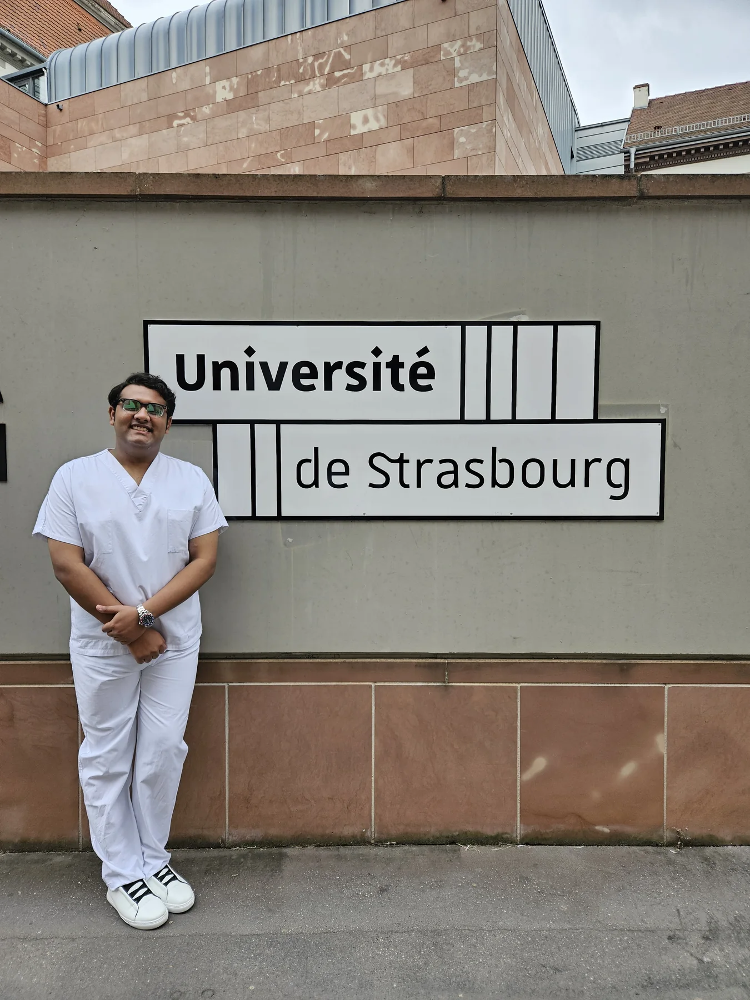
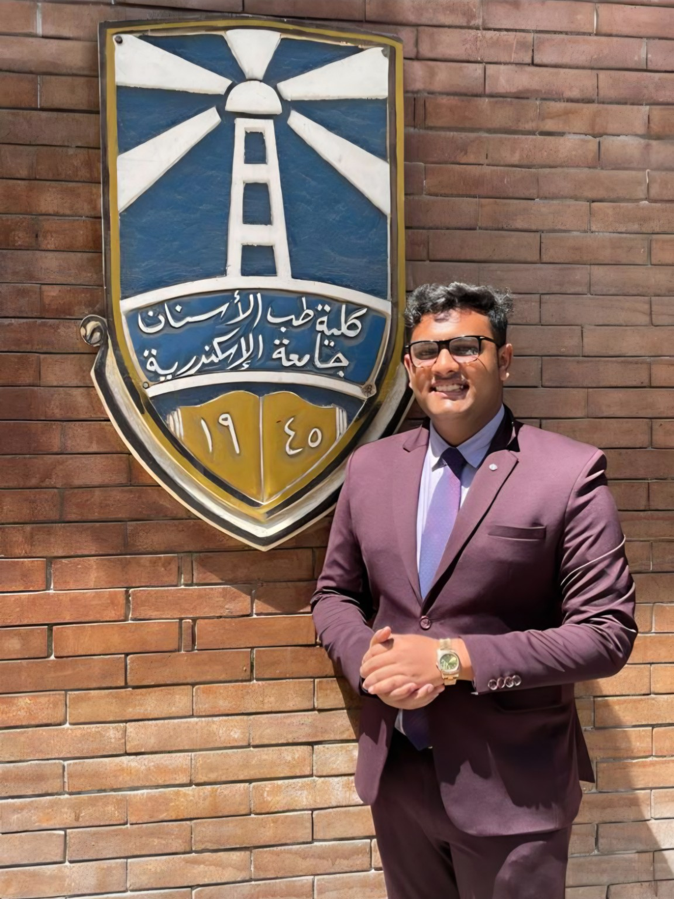
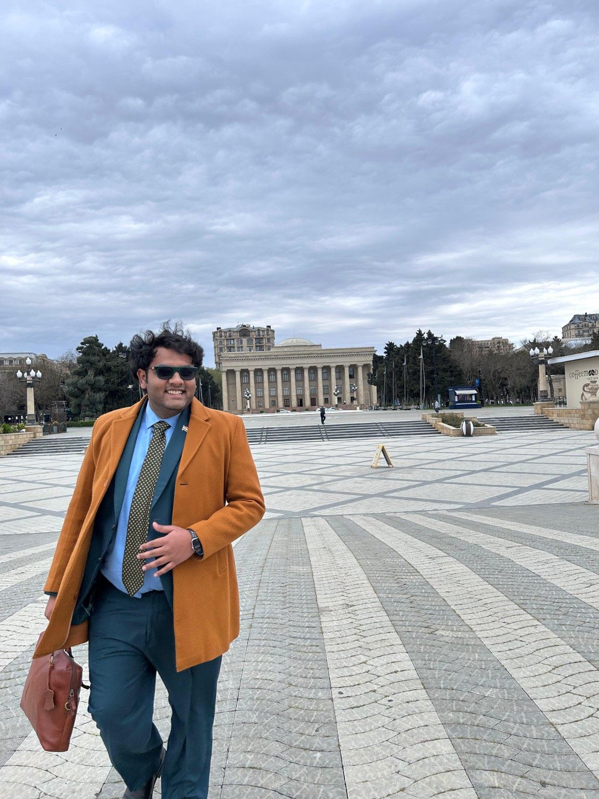
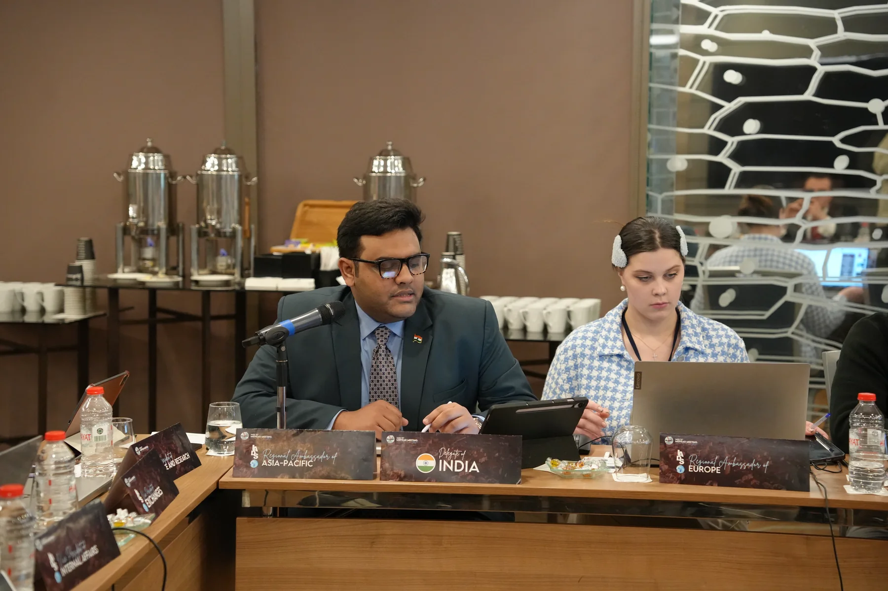
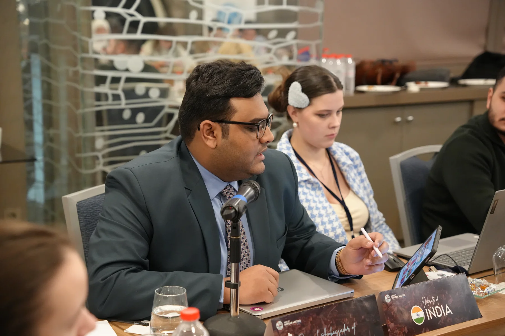

University of Strasbourg
Clinical student exchange involving rotations, operational observation and supervised clinical assistance.
 OFFICIAL WEBSITE
OFFICIAL WEBSITE
INDIA AS THE POINT OF DEPARTURE
An accurate geographic view of locations reflected in the professional narrative and evidence archive. The map describes engagement—not institutional affiliation or policy authority.
Geographic geometry: Natural Earth · public domain



PRESERVED INVITATIONS
Selected invitations are presented alongside the photographic record and remain available in full through the Evidence Archive.
Clinical student exchange involving rotations, operational observation and supervised clinical assistance.
Clinical exchange combining rotations, workshops, lectures and clinical observation.
International governance experience as India’s First Delegate across three consecutive IADS assemblies.
Invited to present research on the oral and social health effects of vaping and e-cigarettes at ADOH 2023.
Invited in his capacity as President to participate in IDEX Egypt 2026, extending the international leadership and professional-engagement record.
VOICE · PLACE · REPRESENTATION
Seven distinct original films accompany the world map, bringing professional dialogue, representation and field engagement into one focused global chapter.

